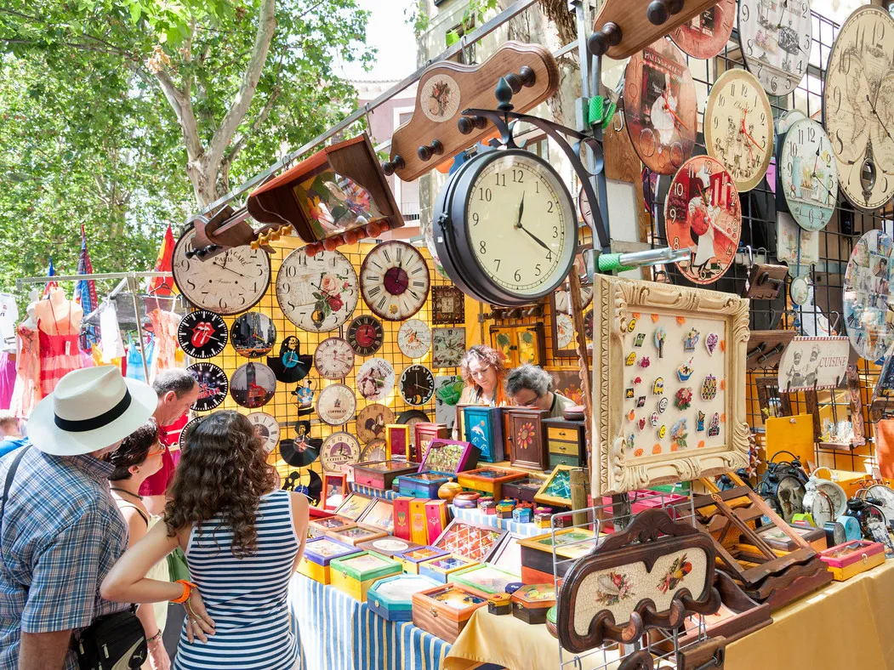
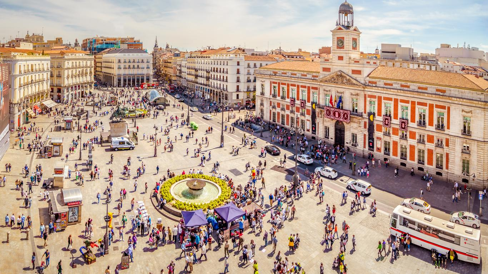
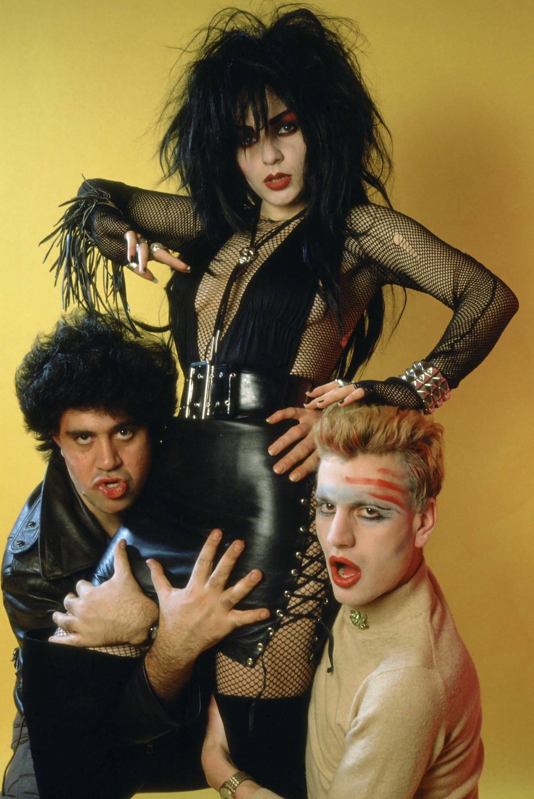
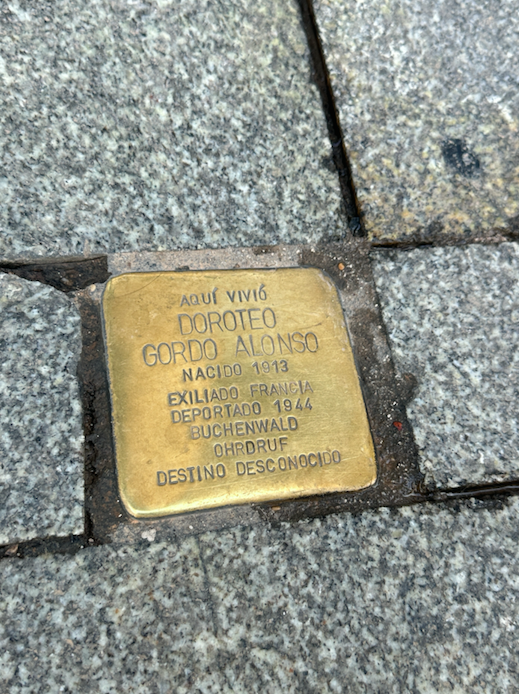
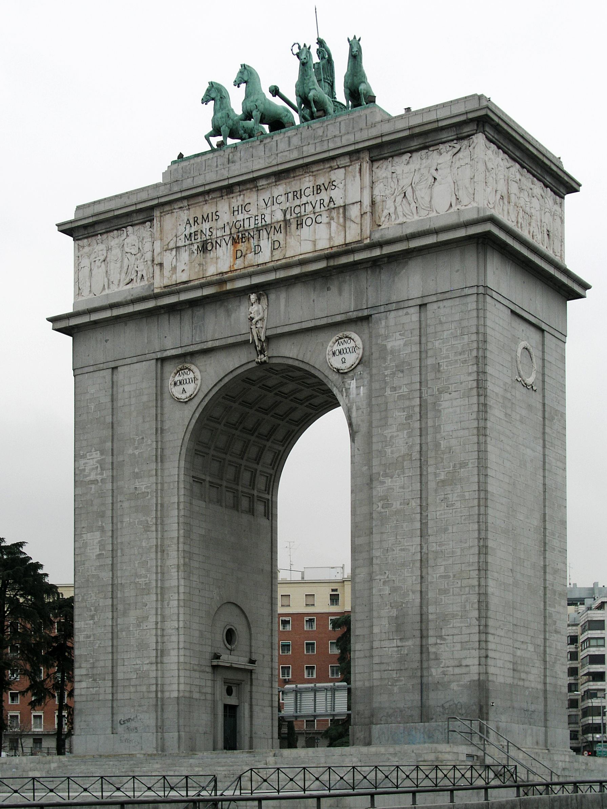
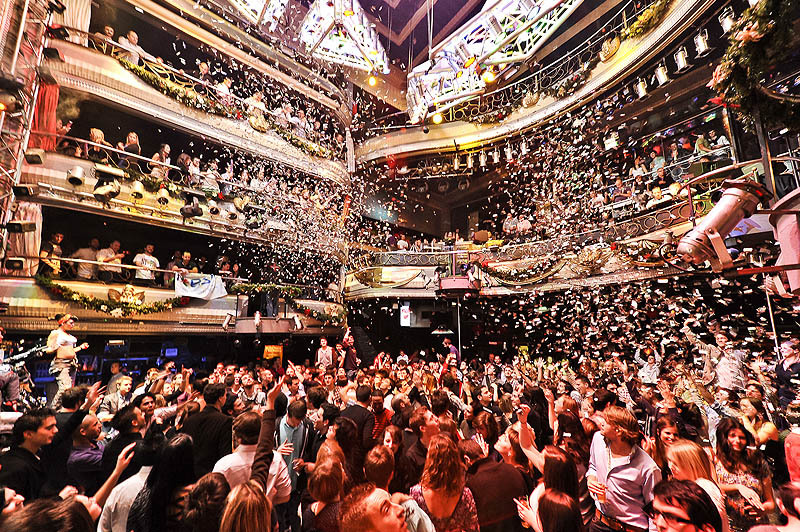

Madrid is like a lively symphony of culture, pulsating with energy
at every turn. Whether you're wandering through the bustling streets
of Puerta del Sol or savoring the mouthwatering tapas in hidden local
gems, there's an undeniable charm that sweeps you off your feet.
Madrid invites you to immerse yourself in its rhythm, promising an
unforgettable adventure filled with warmth, flavor, and endless discoveries.
TOP 5 ACTIVITIES

1. El Rastro
El Rastro flea market in Madrid is a bustling street market offering
a diverse array of goods, from antiques and clothing to artisan crafts
and souvenirs. Check out Condé Nast’s review
to learn more about El Rastro’s history!
2. Parque del Retiro
Parque del Retiro is a serene oasis in the heart of the city, featuring
lush greenery, peaceful lakes, and beautiful gardens perfect for relaxing
strolls or picnics. It's a beloved escape where visitors can unwind amidst
nature's beauty and even enjoy cultural events or rowboat rides on the
lake. Learn more about Retiro on Madrid’s tourism page.

3. Puerta del Sol
Puerta del Sol is the vibrant heart of Madrid, a bustling square where locals
and tourists gather amidst iconic landmarks, lively street performers, and a
myriad of shops and cafes. It's a lively hub that encapsulates the city's spirit,
inviting visitors to soak in its energy and atmosphere. Explore Puerta del Sol at
night through this YouTube Vlog.
4. Museo del Prado
The Museo del Prado is a world-renowned art museum housing a stunning collection
of European masterpieces, including works by Velázquez, Goya, and El Greco. It's a must-visit
destination for art lovers, offering a glimpse into the rich cultural heritage of Spain and
beyond. Avoid the lines and get your tickets
here!
5. El Matadero
El Matadero is a dynamic cultural center housed in a former slaughterhouse, now
transformed into a vibrant space for exhibitions, performances, and events, showcasing contemporary arts
and culture in the heart of the city. Check out my previous vlog on El Matadero
here!
TIPS: DON'T LET SPAIN TURN TO PAIN
Use Taxis for the Airport: Taxi Drivers in the Madrid area have a flat fee
of €30 to and from the airport. Ubers, Cabify, and Bolt might be more expensive otherwise.
Brush up on essential Spanish phrases: You’ll probably take a Taxi, speak to
a barista, or need to ask for directions. While Madrid is a very international city, brushing up on your Spanish will
only make you feel more prepared.
Keep your friends close and your purse closer: Crowded areas are a target
spot for pickpockets. Beware of distractions and leaving your bags unattended. Use a bag that's hard to pry open.
Read the Dress Code: Some popular tourist clubs are notorious for denying
entry to those not strictly following the dress code. Don’t cut your night short and stay informed about the club’s
expectations.
Not all ham is created equal: Many places in tourist areas will try to
upcharge you on their ham prices. While Madrid has a Jamon heavy culture, it’s worth knowing what the actual market value is
for good quality ham. Also, don’t get scammed by getting Paella in Madrid. Paella is more prevalent
in the coastal regions of Spain. Madrid is all about the Tortilla Española and Cocido Madrileño.
FROM DICTATORSHIP TO DISCOS
Madrid's history unfolds as a tale of resilience and transformation. Emerging from the
shadow of Franco's dictatorship, the city embraced democracy and experienced a cultural renaissance, with
its streets becoming a canvas for artistic expression. Amidst the fervor of newfound freedom,
Madrid's nightlife exploded, with legendary discotecas like Joy Eslava and Kapital drawing revelers
into the early hours, shaping the city's reputation as a vibrant hub of entertainment and nocturnal adventure.

The Movida Madrileña — An explosion of music, arts, clubbing and drugs in a
post-dictatorship democracy. Many prominent activists and artists emerged.

Stolpensteine in Madrid placed to commemorate the living place of those executed
during Franco’s dictatorship.

Remnants of the dictatorship remain, like Franco’s Victory Arch, which still
haunts Spaniards who lived through Franco’s reign.

If dancing is your thing, Madrid has no shortage of clubs with floors and floors
of fun.